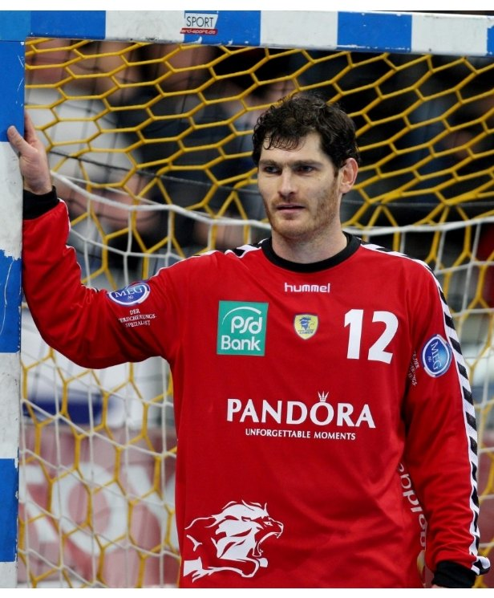
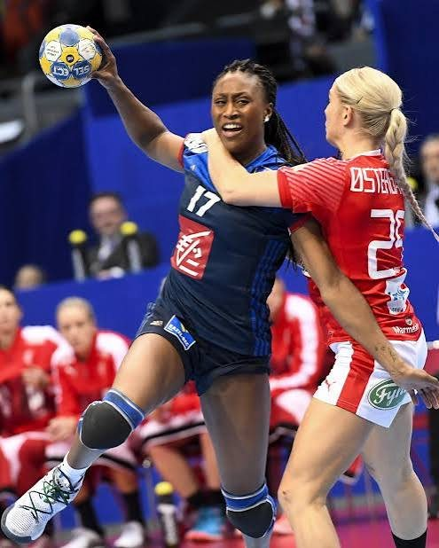
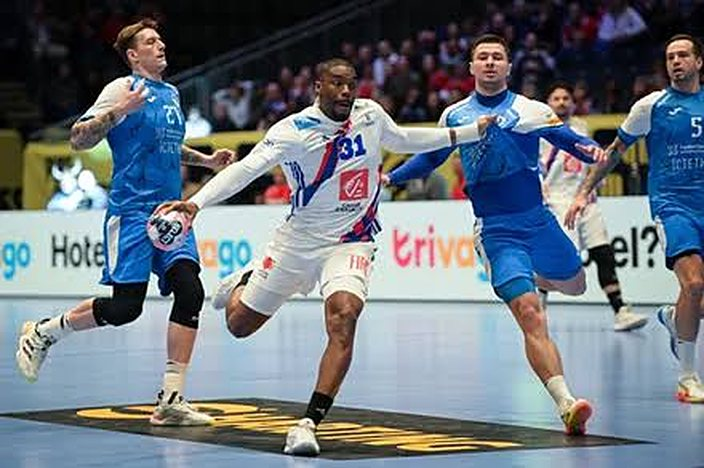
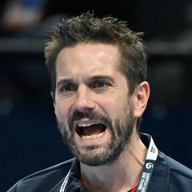

Mock up, not published. Bracketed items to confirm: signatures, photo credits, and where each prize goes.

[Prize to assign]GermanyGoalkeeperIHF World Player of the Year, 2004
Henning Fritz is one of the great goalkeepers of the modern game. Born in Magdeburg in 1974, he won the German Cup, two EHF Cups and the 2001 German title with SC Magdeburg, then became one of the best goalkeepers in the world at THW Kiel, where he won four more German championships and the 2007 EHF Champions League. He finished with five seasons at the Rhein-Neckar Löwen and retired in 2012, returning briefly in 2021 and, at 49, in 2024.
For Germany he played 235 internationals and won the European title and Olympic silver in 2004, then the World Championship on home soil in 2007. He was named best goalkeeper of the 2003 and 2007 World Championships, EURO 2004 and the Athens Olympics, and in 2004 became the first goalkeeper named IHF World Player of the Year.
The jersey is his number 12 Rhein-Neckar Löwen goalkeeper jersey, to be signed by Henning [signature to confirm on arrival]. He donated it to support CalCup and youth handball in the Bay Area.

[Prize to assign]FranceLeft wingWorld champion 2017, captain
Siraba Dembélé is one of the best left wings the women's game has produced. Born in Dreux in 1986, she was named best left wing of the French league five years in a row and won two French Cups with Toulon Saint-Cyr, then spent a decade with leading clubs abroad: Randers HK, HC Vardar and Rostov-Don, where she won the 2017 EHF Cup and two Russian titles. She was twice named best left wing of the EHF Champions League and retired in 2023 at CSM București.
With France she played 291 matches and scored 848 goals between 2006 and 2021, second only to Véronique Pecqueux-Rolland, and no one has captained the team longer. She won Olympic silver in Rio in 2016, then captained France to the 2017 World Championship, where she was named best left wing, and to the 2018 European title on home soil.
The jersey is [jersey to confirm on arrival], signed by Siraba. She donated it to support CalCup and youth handball in the Bay Area.

[Prize to assign]FranceCentre backOlympic champion 2008, 2012Head coach of France 2020 to 2026

Guillaume Gille was the playmaker of the French generation that won everything. Born in Valence in 1976, he played his whole club career alongside his brother Bertrand: French champion with Chambéry in 2001, then ten seasons at HSV Hamburg, with the 2007 Cup Winners' Cup and the 2011 German title, before returning to Chambéry and retiring in 2015. For France he played 308 matches and won Olympic gold in 2008 and 2012, two World Championships and two European titles.
He became assistant coach of France in 2016 and head coach in January 2020. His teams won Olympic gold in Tokyo, the 2024 European Championship and World Championship bronze in 2025. He left the post in February 2026.
The jersey is Dylan Nahi's white France jersey, number 31. Nahi was European champion in 2024 under Guillaume and best left wing of the 2025 World Championship. [Signed or game worn: to confirm.] Guillaume donated it to support CalCup and youth handball in the Bay Area.